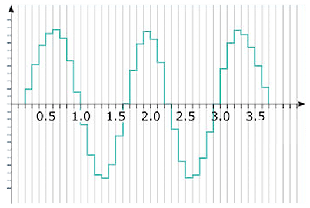

Sound is a vibration and can be represented as a sinusoid wave.

In order to work with sound we need to capture it.
Sound is a vibration and can be represented as a sinusoid wave.
The main characteristics of a sound wave are:
- Amplitude. The bigger amplitude we have the louder sound we hear.
- Frequency. The higher frequency the higher pitch we hear.
So how is sound captured?
The real microphone is capturing the value of amplitude every 1/44100 sec (44100 is just an example number), and we
get something like this.

Why we used 1/44100 sec in the example? "1/44100" is a Sample Rate.
The fact that we capture sound every 1/44100 sec
due to Nyquist theorem
means that we can capture sound in 0Hz - 22500Hz diapasone (22500 = 44100/2).
And 22500Hz - is the highest pitch that human can hear, so we do not need to capture sound more frequentnly then 44100 Hz.
44100 Hz - is a standard sample rate in music staff.